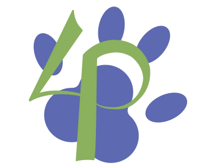
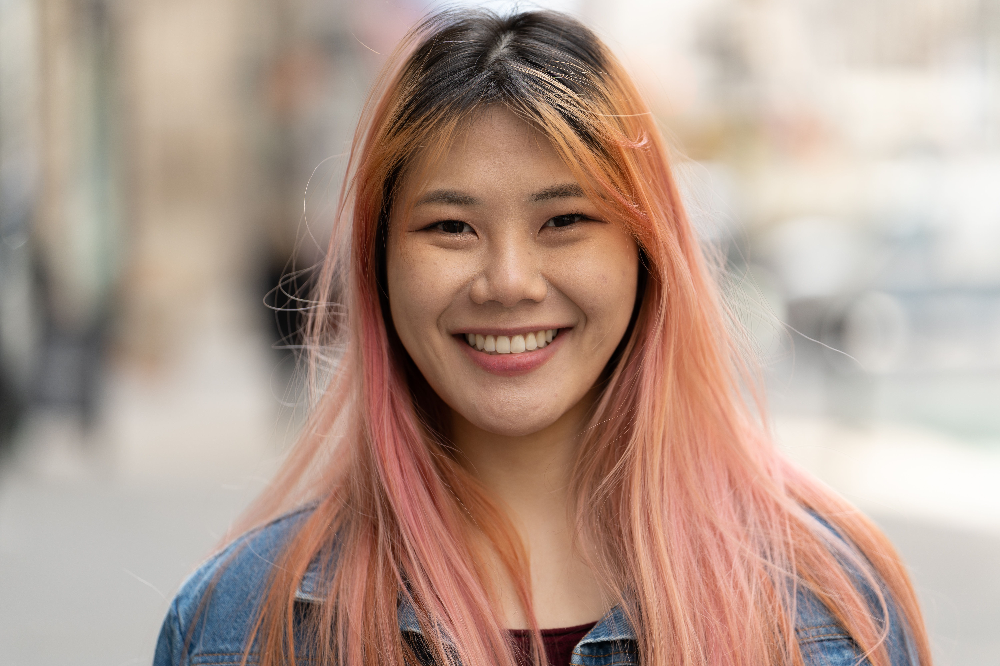
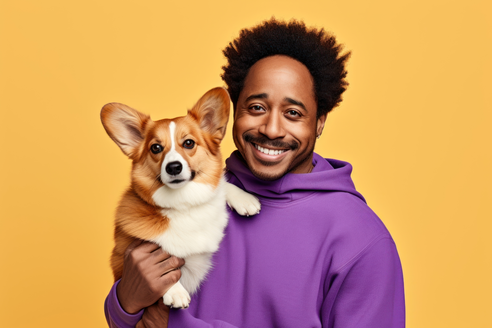
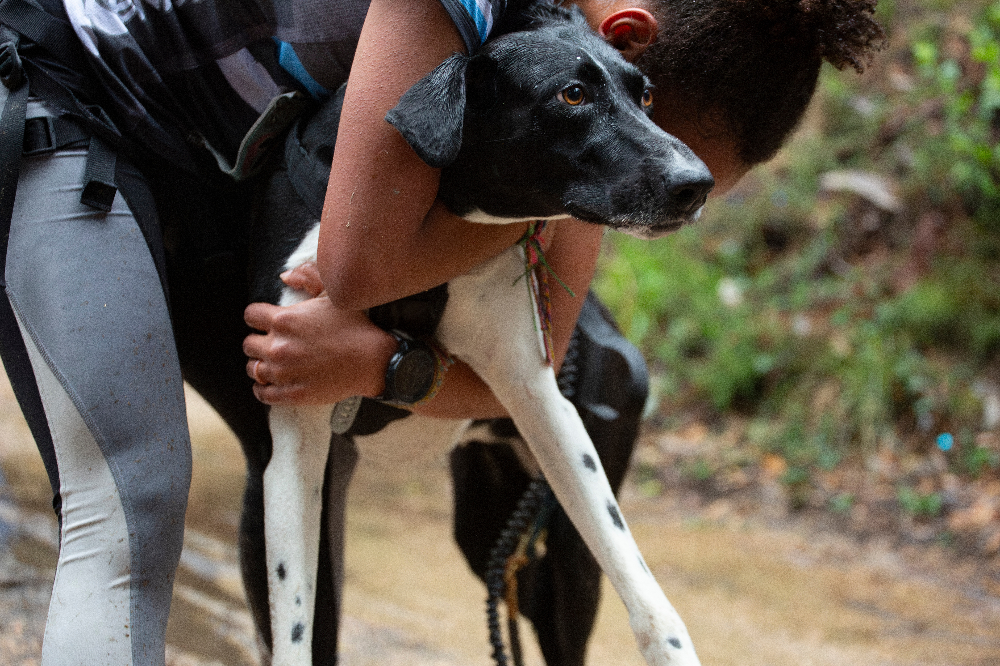
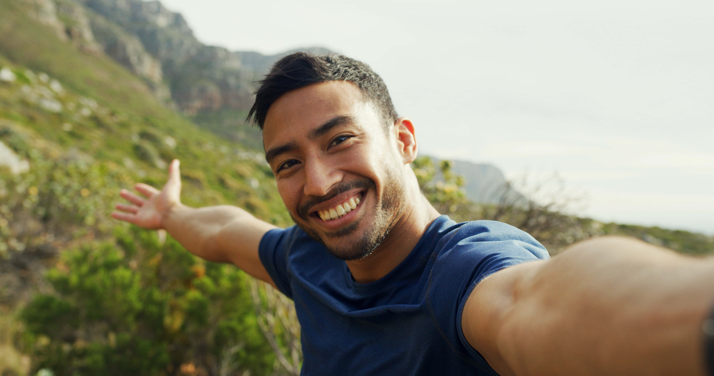
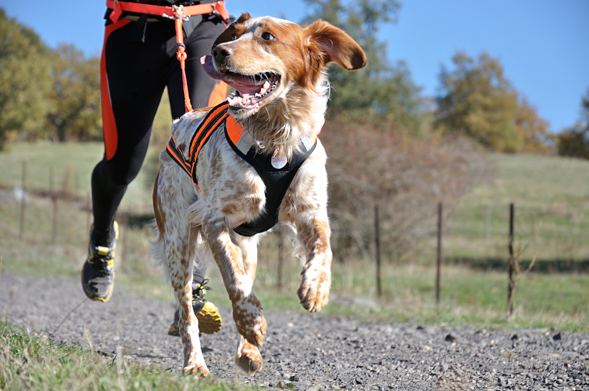
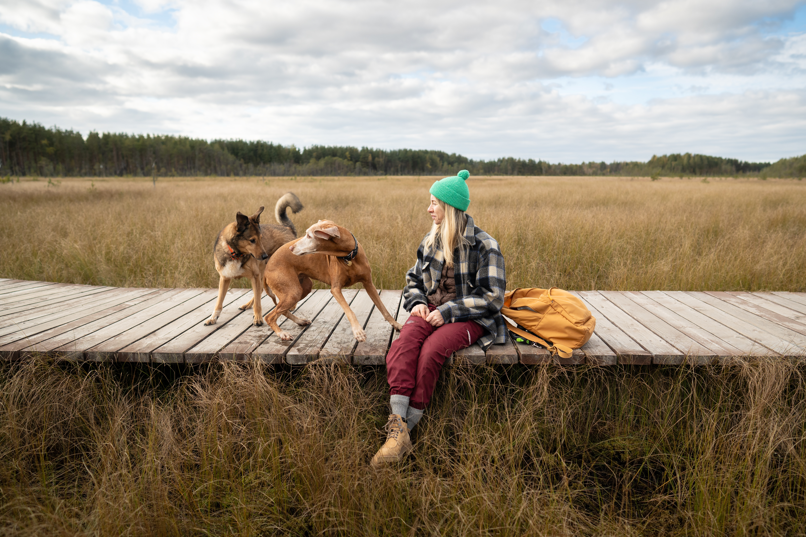

Quienes Somos
El Club 4 Patas nació con una idea sencilla: crear un espacio donde las personas y sus compañeros caninos puedan disfrutar del movimiento de una forma tranquila, respetuosa y accesible. Nuestro entorno esta situado en la costa catalana, conocido por su mezcla de zonas verdes, caminos suaves y un ambiente que invita a la vida activa. Desde el primer día entendimos que el deporte, cuando se comparte con un perro, deja de ser una obligación y pasa a convertirse en un proceso de conexión y aprendizaje mutuo. Lo que nos define no es la velocidad ni los resultados, sino la calidad del camino recorrido.
Queremos que cada persona encuentre su ritmo
Que cada perro explore con seguridad, y que cada salida represente un pequeño paso hacia el bienestar. Aquí no hablamos de competir ni de superar límites extremos: hablamos de respirar, observar, acompañar y construir vínculos sólidos basados en la confianza. Nuestro club funciona como una comunidad donde cada miembro aporta su historia, su manera de entender el deporte y su forma de relacionarse con su perro. Nos reunimos en rutas accesibles, organizamos grupos según necesidades, y mantenemos una actitud abierta, donde todas las experiencias son válidas.
Creemos que la inclusión, el respeto y la pluralidad
Creemos que la inclusión, el respeto y la pluralidad no son valores abstractos, sino prácticas que se viven en cada entrenamiento. Si buscas un lugar donde moverte sin presiones, aprender sobre bienestar canino, descubrir caminos, conocer a tu perro y hacerlo en compañía de personas que valoran la calma y la autenticidad, entonces 4 Patas es tu hogar. Aquí crecerás a tu ritmo y siempre acompañado.
Aina Mori

Mi nombre es Aina Mori Hoshida, y nací en una
familia catalana con raíces japonesas profundamente
marcadas por la convivencia con la naturaleza y el
respeto por los ciclos del cuerpo y del entorno.
Crecí entre dos culturas que, aunque distintas,
comparten una visión muy parecida sobre el valor de
la calma, la constancia y la importancia de encontrar
equilibrio en la vida diaria.
Esos principios se convirtieron, sin darme cuenta, en
la base de lo que hoy es el Club 4 Patas.
Desde pequeña me sentí atraída por las actividades
al aire libre. Para mí, salir a caminar o trotar era una
forma de ordenar la mente, conectar con el entorno y
mejorar mi bienestar sin sentir presión.
Con el tiempo descubrí que esa sensación se
multiplicaba cuando me acompañaba un perro: la
energía se volvía más ligera, el ritmo más orgánico, y
el vínculo más profundo.
Fue entonces cuando empecé a soñar con un
espacio donde otras personas pudieran experimentar
lo mismo.
Pero no quería crear un club competitivo ni un
espacio donde se midiera el rendimiento.
Quería un lugar donde cada persona sintiera que
podía moverse sin prisa, donde cada perro fuera
respetado según sus necesidades y donde la
comunidad se construyera desde el apoyo mutuo.
Así nació la idea de 4 Patas: un proyecto pensado
para quienes buscan una forma de entrenar más
humana, más sensata y más conectada con la
realidad de cada equipo humano–canino.
Hoy sigo guiando al club desde esa visión.
Acompaño a los grupos, asesoro en temas de
bienestar canino básico y, sobre todo, me encargo de
que cada persona que llega encuentre un entorno
amable y accesible.
Mi objetivo es sencillo: que cada salida deje una
sensación de equilibrio, tranquilidad y conexión
auténtica.
Mateo Alvarez

Soy Mateo Alvarez Johnson,de una madre
afroamericana y padre sudamericano, ellos me
enseñaron ya desde pequeño, el valor de la
diversidad cultural y la curiosidad por el mundo
Pasé gran parte de mi vida viajando, recorriendo
ciudades, parques nacionales, pueblos pequeños y
todo tipo de paisajes.
En cada lugar que visitaba buscaba siempre lo
mismo: espacios donde la vida al aire libre formara
parte del día a día y donde las personas compartieran
experiencias sin importar su procedencia.
Durante mis viajes, uno de los descubrimientos más
importantes fue observar cómo el vínculo entre
personas y perros cambiaba según la comunidad.
Algunos lugares integraban al perro como
compañero cotidiano; otros lo veían como miembro
activo de la vida deportiva.
Esa mezcla de perspectivas me inspiró
profundamente, y me llevó a interesarme por el
bienestar animal, por los deportes en pareja
humano–canina y por la idea de movimiento como
herramienta de conexión social.
Cuando decidí establecerme en la costa catalana
sentí que por fin había encontrado el lugar donde
construir algo más estable.
Conocí a Aina en uno de esos paseos donde las
conversaciones fluyen sin esfuerzo, y pronto
entendimos que compartíamos una visión común:
crear un espacio donde entrenar fuera una actividad
accesible, amable y adaptada a cada ritmo.
Mi papel en el club se centra en coordinar rutas, guiar
grupos diversos y asegurar que cada salida sea
inclusiva y motivadora, especialmente para quienes
llegan por primera vez.
Creo en el poder de la comunidad y en el aprendizaje
constante que nos ofrece convivir con nuestros
perros.
Para mí, 4 Patas no es solo un club; es un punto de
encuentro donde las historias se cruzan y el deporte
se convierte en una manera de cuidar de nosotros
mismos y de quienes nos acompañan.
Somos un club

Pepa Rosales
@pepiActiu

Alex Rodríguez
@alex_conecta

Mar Gómez
@mar_runs4patas

Roger Delamunt
@rogeri_run
Pepa Rosales
@pepiActiu
Alex Rodríguez
@alex_conecta
Mar Gómez
@mar_runs4patas
Roger Delamunt
@rogeri_run
Pepa Rosales
@pepiActiu
Alex Rodríguez
@alex_conecta
Mar Gómez
@mar_runs4patas
Roger Delamunt
@rogeri_run